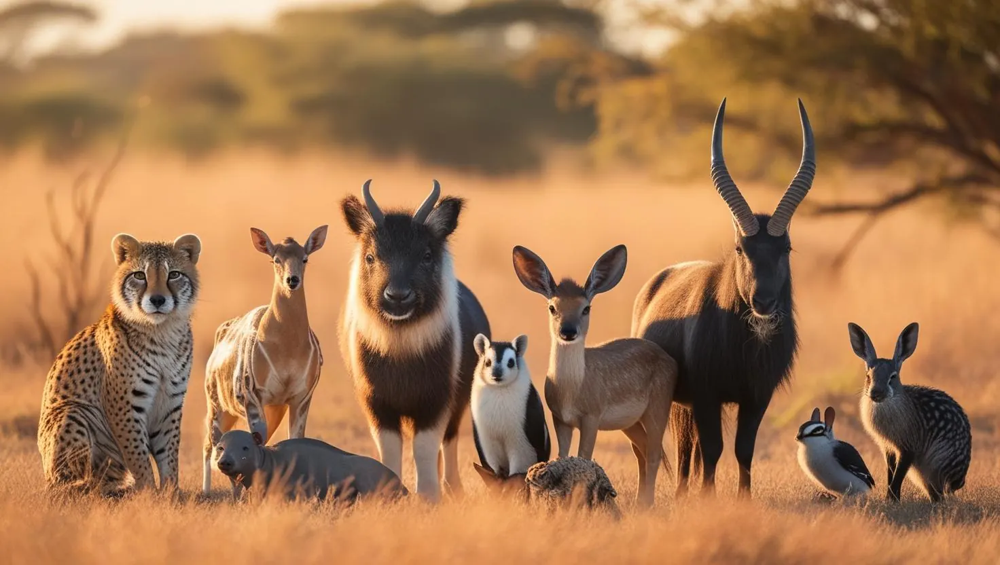
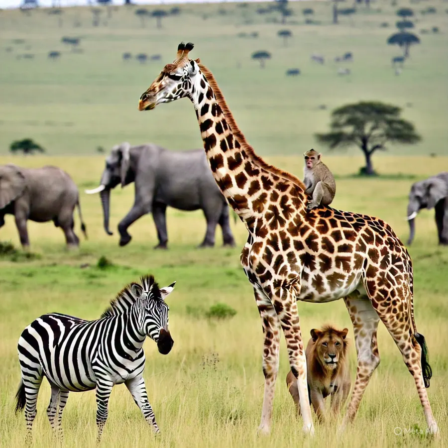
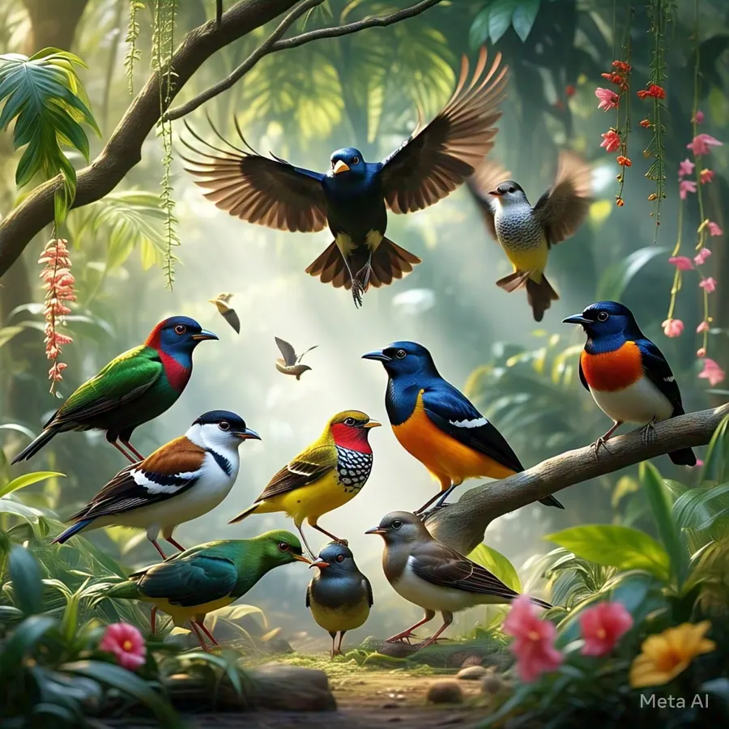
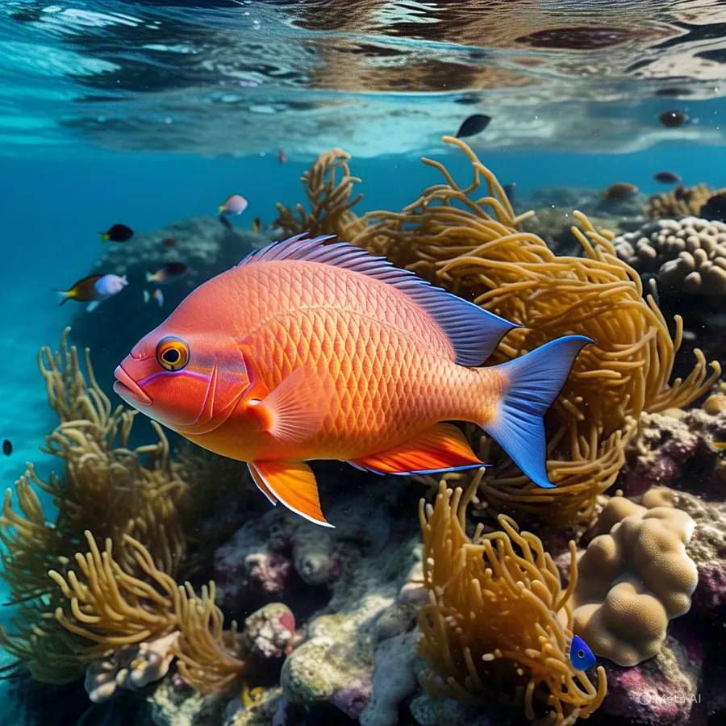
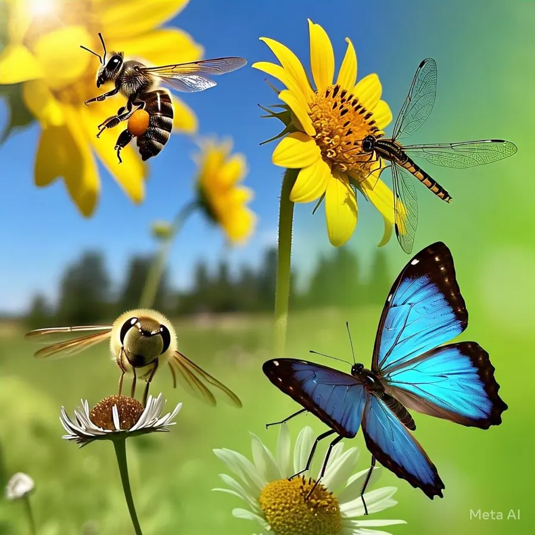
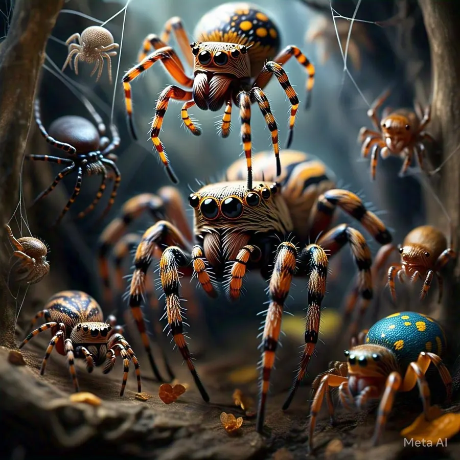
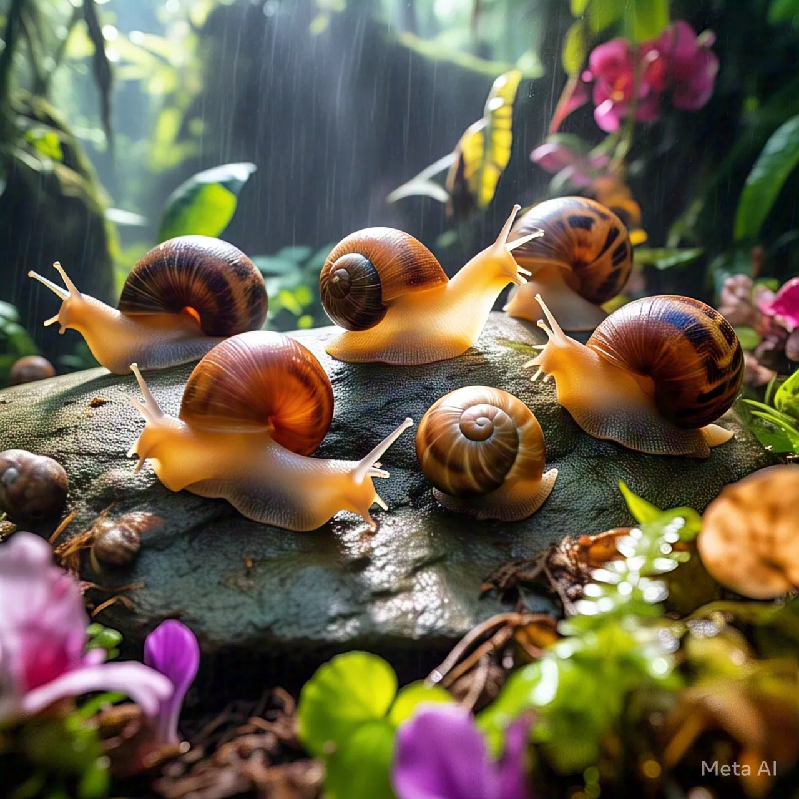
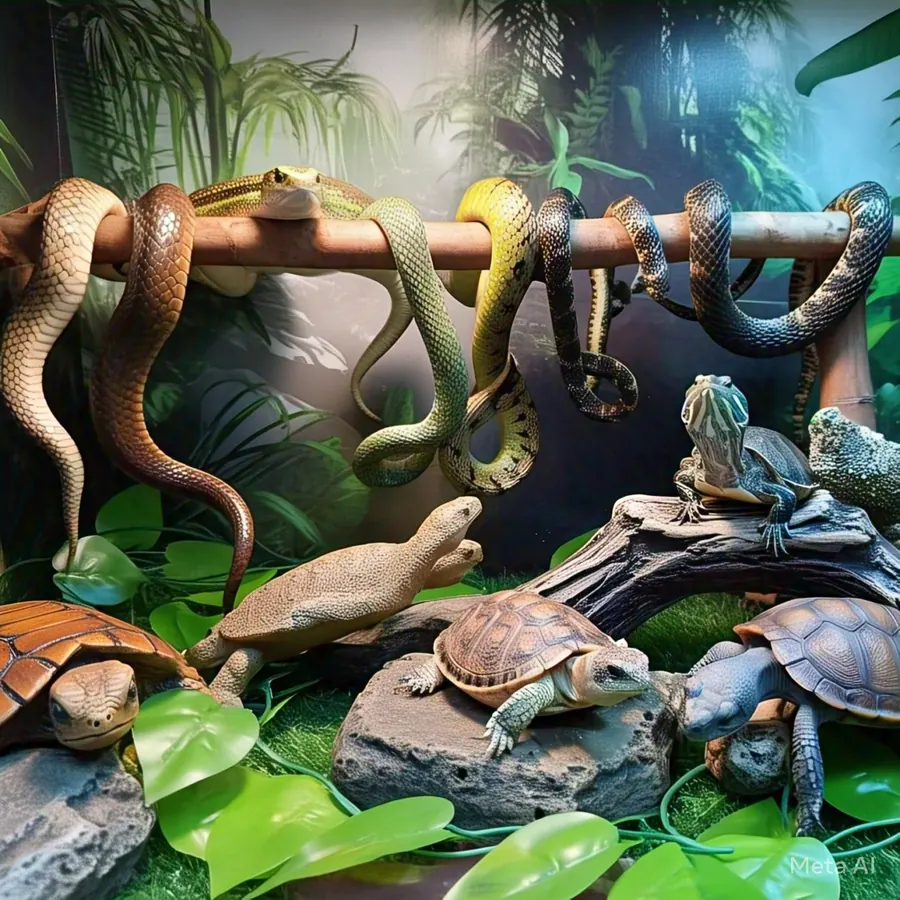
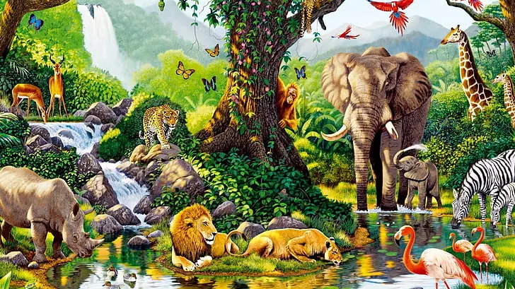

Animal Base
Prepare to discover the amazing and untamed world of animals. Facts, photos and fascinating information about creatures from every corner of the globe, from fuzzy companions to ferocious hunters.
Seven families, one place
Pick a family to meet its animals, or search them all from the home page.
-

7 animals
Mammals
Mammals have hair or fur and are warm-blooded.
-

5 animals
Birds
Birds have feathers, wings and beaks, and no teeth.
-

4 animals
Fish
Fish are aquatic vertebrates, from bony fish to sharks and rays.
-

6 animals
Insects
Insects have six legs and a body in three parts: head, thorax and abdomen.
-

6 animals
Arachnids
Arachnids are eight-legged arthropods with two body sections and no antennae.
-

4 animals
Mollusks
Mollusks have soft bodies, and some have a shell for protection.
-

6 animals
Reptiles
Reptiles are cold-blooded animals covered in scales.
Made for curious kids and grown-ups
There is something here for every animal enthusiast, whether you love lions, whales, birds or insects. Let us explore, study and enjoy the creatures of our planet together.
Search
Find any animal by name, habitat or diet.
Learn
Open a card for facts, habitats and a fun fact.
Play
Test yourself with the fish quiz.
